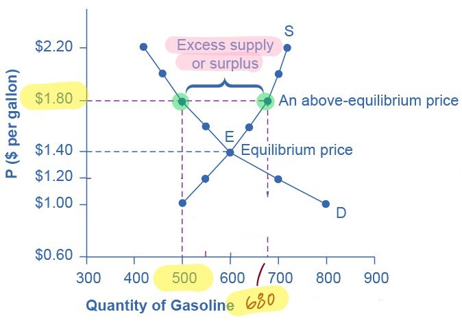
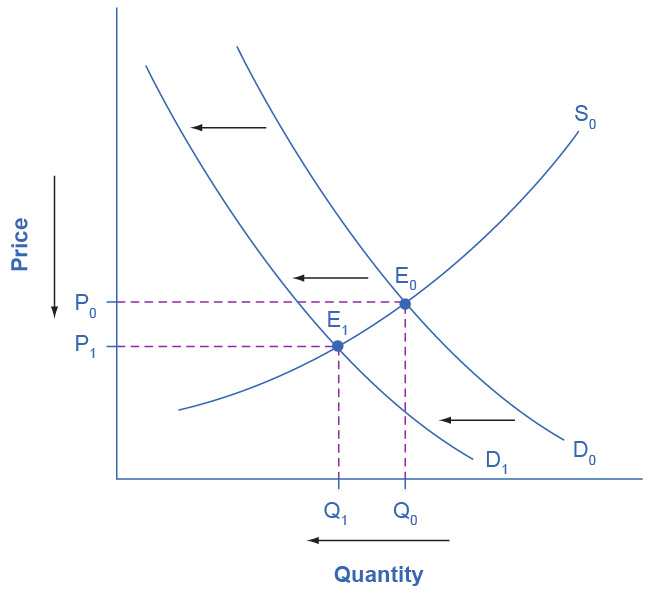

The supply and demand model
Now, we combine demand and supply. Doing so gives us one of the most powerful models in all of economics: the supply and demand model (or, as it is called in more advanced economics textbooks, the partial equilibrium model). First, we will examine how demand and supply determine the prices of goods and services and the quantities that are bought and sold. Then, we will investigate how changes to demand and supply lead to changes in prices and the quantities purchased.
Equilibrium: Where demand and supply intersect
As you have seen, the graphs for demand and supply curves both have price on the vertical axis and quantity on the horizontal axis. Consequently, the demand curve and the supply curve for a particular good or service can appear on the same graph. When they do, there will be a point where the downward sloping demand curve and the upward sloping supply curve intersect. This point of intersection is important. It determines what the price and what the quantity purchased will be in a market.
Figure 1 shows the interaction of demand and supply in the market for gasoline. The demand curve (D) is identical to figure 1 on the “Demand for goods and services” page. The supply curve (S) is identical to figure 1 on the “Supply of goods and services” page. Table 1 contains the same information.
| Price | Quantity demanded | Quantity supplied |
|---|---|---|
| (per gallon) | (millions of gallons) | (millions of gallons) |
| $1.00 | 800 | 500 |
| $1.20 | 700 | 550 |
| $1.40 | 600 | 600 |
| $1.60 | 550 | 640 |
| $1.80 | 500 | 680 |
| $2.00 | 460 | 700 |
| $2.20 | 420 | 720 |
The point where the supply curve (S) and the demand curve (D) cross, designated by point E in figure 1, is the equilibrium. The price at that point is the equilibrium price, and the quantity demand and the quantity supplied (which will be the same quantity) is the equilibrium quantity.
In figure 1, the equilibrium price is $1.40 per gallon of gasoline and the equilibrium quantity is 600 million gallons. If you had only the demand and supply schedules in table 1, and not the graph, you could find the equilibrium price and quantity by looking for the price in the table where the quantity demanded and the quantity supplied are the same.
If a market is at its equilibrium price and quantity and nothing changes, then the price and the quantity (i.e., the quantity demanded and the quantity supplied) won’t change. If, however, the price in a market is higher or lower than the equilibrium price, economic pressures arise to move the price toward the equilibrium price and quantity.
A surplus
Imagine that the price of a gallon of gasoline was above the equilibrium price—that is, instead of $1.40 per gallon, the price is $1.80 per gallon. At this higher price, the quantity demanded drops from 600 to 500. This decline in quantity demanded reflects the tendency that consumers have to find ways to use less gasoline when the price rises.
At the same time, however, when the price is $1.80, the quantity of gasoline supplied rises from 600 to 680 million gallons. So, while quantity demanded has dropped to 500 gallons, quantity supplied has risen to 680 gallons. Thus, we have an excess supply or a surplus.

For all goods and services, whenever the price is above the equilibrium price, the quantity supplied will be greater than the quantity demanded, and there will be a surplus.
When there is a surplus, gasoline accumulates at gas stations, in tanker trucks, in pipelines, and at oil refineries. This accumulation puts pressure on gasoline sellers. If a surplus remains unsold, the firms involved in making and selling gasoline are not receiving enough cash to pay their workers and to cover their expenses. In this situation, some producers and sellers will want to cut prices, because it is better to sell at a lower price than not to sell at all. Once some sellers start cutting prices, others will follow to avoid losing sales.
These price reductions will, in turn, increase the quantity demanded. (E.g., a greater quantity is demanded when the price is $1.60 than when it is $1.80.) Thus, there will be movement down the supply curve and down the demand, and eventually the quantity supplied and the quantity demanded will converge.
So, if the price is above the equilibrium level, incentives built into the structure of demand and supply will create pressures for the price to fall toward the equilibrium. In short, a surplus forces the price down.
A shortage
Now suppose that the price is $1.20 per gallon. At this price, the quantity demanded increases from 600 to 700. In this scenario, drivers will take longer trips, stop sharing rides to work, and buy larger cars that get fewer miles per gallon.
At the same time, when the price is $1.20 producers won’t be able to produce as much gasoline. (Remember, this depends on the opportunity cost of producing each unit of a good. Some amount of gasoline can be very easily produced, and so the opportunity cost of producing it is low. Only this quantity will be sold at the lowest prices.) At a price of $1.20 per gallon, the quantity supplied falls from 600 to 550.
When the price is below the equilibrium price, we have excess demand or a shortage. In this situation, gasoline producers will begin to produce more gasoline, but doing so will entail higher costs. Thus, as the quantity supplied increases, the price has to increase as well. This, in turn, will lower demand.
So, if the price is below the equilibrium level, incentives built into the structure of demand and supply will create pressures for the price to rise. In short, a shortage forces the price up.
Changes to supply and demand
Recall the factors that affect demand and the factors that affect supply. Now that we have the complete supply and demand model, we can investigate how changes to supply or to demand will affect the equilibrium price and quantity.
Here is a four-step process to follow when investigating a change to supply or demand.
-
Draw a demand and supply model that represents the situation before the change takes place. Indicate the initial equilibrium values for price and quantity.
-
Determine whether the factor is one that affects demand or affects supply.
-
Determine whether the effect on demand or supply causes the curve to shift to the left or to the right. Draw the new demand or supply curve on the graph.
-
Identify the new equilibrium price and quantity, and compare them to the original equilibrium price and quantity. Has this change caused the equilibrium price to increase or decrease? Has it caused the equilibrium quantity to increase or decrease?
Figures 6 - 8 illustrate three of the four possible effects of a change to supply or to demand.


When only supply or only demand changes (and the other one remains unchanged), we know the direction in which the equilibrium price and quantity will change. And this is true, even if we don’t know the actual values for the initial equilibrium price and quantity or by how much supply or demand has changed.
If, however, both supply and demand change at the same time, then, without knowing the actual initial equilibrium price and quantity and the size of the change to demand and supply, we won’t be able to determine the direction in which both the equilibrium price and quantity will change—or if they will change at all.
One illustration of this is shown in figure 9. When supply decreases and demand increases, then the equilibrium price has to increase. But we can’t be sure if the equilibrium quantity will increase, decrease, or stay the same. Whichever it is depends on the size of the changes to supply and demand.
In figure 9, the equilibrium quantity is unchanged, but as you can see, if demand had increased by a little bit more or supply had decreased by a little less, the equilibrium quantity would have increased. On the other hand, if the demand had increased by less or supply had decreased by more, the equilibrium quantity would have decreased.